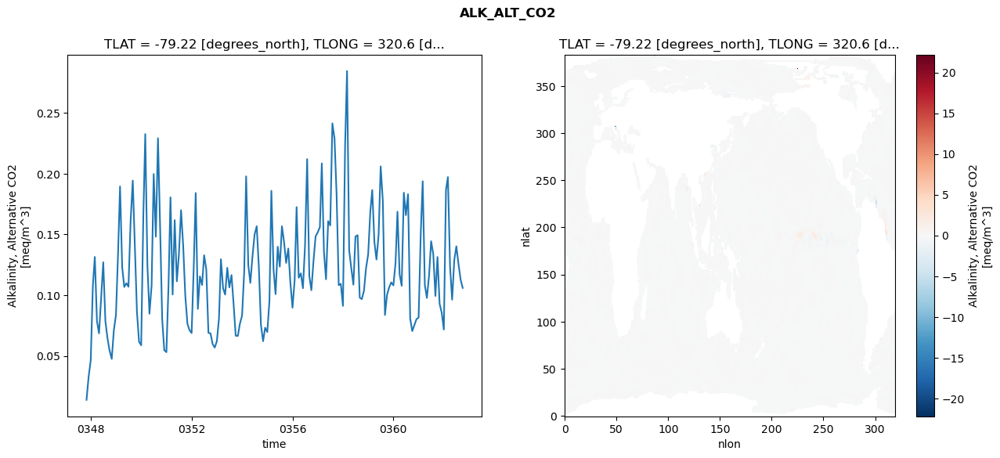
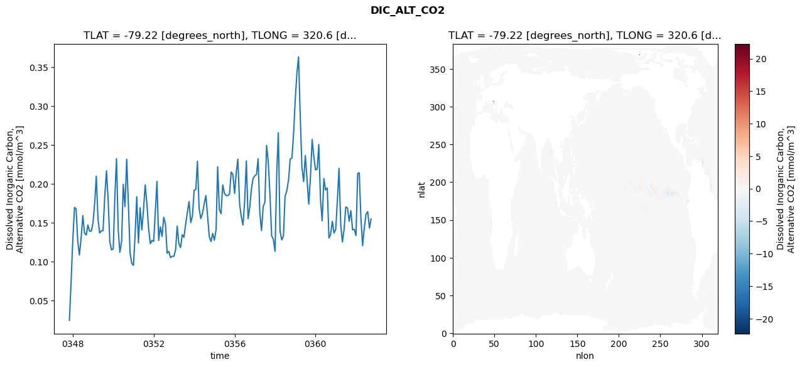
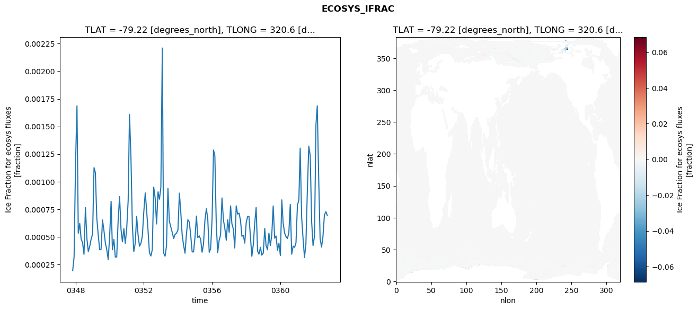
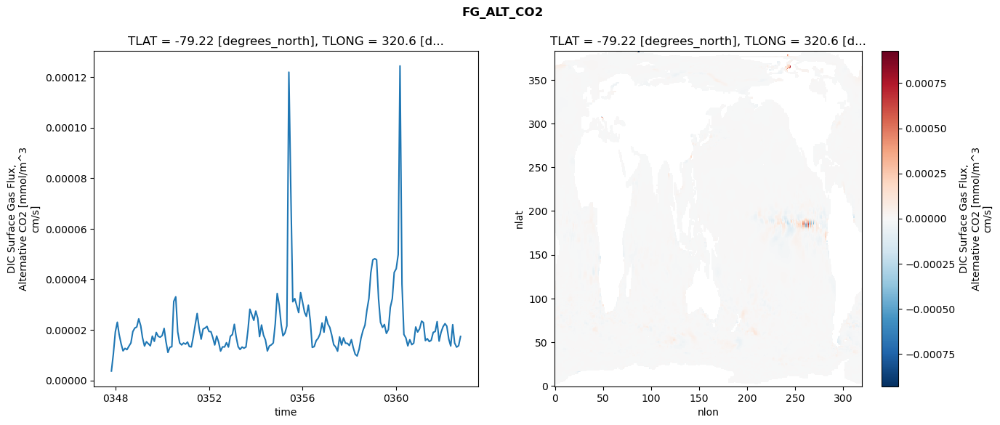

glb-dor_North_Atlantic_basin_040_1999-10-01_00163#
Simulation details#
Case: smyle.cdr-atlas-v0.glb-dor_North_Atlantic_basin_040_1999-10-01_00163.001
Basin: North_Atlantic_basin
Polygon: 40.0
Start date: 1999-10
Show code cell source Hide code cell source
import xarray as xr
import matplotlib.pyplot as plt
Show code cell source Hide code cell source
zarr_store = "/path/to/zarr/store"
# Parameters
zarr_store = "/global/cfs/projectdirs/m4746/Projects/Ocean-CDR-Atlas-v0/data/validation/smyle.cdr-atlas-v0.glb-dor_North_Atlantic_basin_040_1999-10-01_00163.001.validation.zarr"
Show code cell source Hide code cell source
%%time
ds_o = xr.open_zarr(zarr_store).compute()
ds_o
CPU times: user 558 ms, sys: 452 ms, total: 1.01 s
Wall time: 1.2 s
<xarray.Dataset> Size: 2MB
Dimensions: (nlat: 384, nlon: 320, time: 180)
Coordinates:
TLAT float64 8B -79.22
TLONG float64 8B 320.6
ULAT float64 8B -78.95
ULONG float64 8B 321.1
* time (time) object 1kB 0347-11-01 00:00:00 ... 0362-10-01 0...
z_t float32 4B 500.0
Dimensions without coordinates: nlat, nlon
Data variables:
ALK_ALT_CO2_diff (nlat, nlon) float32 492kB nan nan nan ... nan nan nan
ALK_ALT_CO2_rmse (time) float64 1kB 0.01378 0.03263 ... 0.1127 0.106
DIC_ALT_CO2_diff (nlat, nlon) float32 492kB nan nan nan ... nan nan nan
DIC_ALT_CO2_rmse (time) float64 1kB 0.02456 0.07325 ... 0.1433 0.1548
ECOSYS_IFRAC_diff (nlat, nlon) float32 492kB nan nan nan ... nan nan nan
ECOSYS_IFRAC_rmse (time) float64 1kB 0.0001938 0.0003147 ... 0.0006945
FG_ALT_CO2_diff (nlat, nlon) float32 492kB nan nan nan ... nan nan nan
FG_ALT_CO2_rmse (time) float64 1kB 3.683e-06 1.041e-05 ... 1.738e-05xarray.Dataset
- nlat: 384
- nlon: 320
- time: 180
- TLAT()float64-79.22
- long_name :
- array of t-grid latitudes
- units :
- degrees_north
array(-79.22052261)
- TLONG()float64320.6
- long_name :
- array of t-grid longitudes
- units :
- degrees_east
array(320.56250892)
- ULAT()float64-78.95
- long_name :
- array of u-grid latitudes
- units :
- degrees_north
array(-78.95289509)
- ULONG()float64321.1
- long_name :
- array of u-grid longitudes
- units :
- degrees_east
array(321.12500894)
- time(time)object0347-11-01 00:00:00 ... 0362-10-...
- bounds :
- time_bound
- long_name :
- time
array([cftime.DatetimeNoLeap(347, 11, 1, 0, 0, 0, 0, has_year_zero=True), cftime.DatetimeNoLeap(347, 12, 1, 0, 0, 0, 0, has_year_zero=True), cftime.DatetimeNoLeap(348, 1, 1, 0, 0, 0, 0, has_year_zero=True), cftime.DatetimeNoLeap(348, 2, 1, 0, 0, 0, 0, has_year_zero=True), cftime.DatetimeNoLeap(348, 3, 1, 0, 0, 0, 0, has_year_zero=True), cftime.DatetimeNoLeap(348, 4, 1, 0, 0, 0, 0, has_year_zero=True), cftime.DatetimeNoLeap(348, 5, 1, 0, 0, 0, 0, has_year_zero=True), cftime.DatetimeNoLeap(348, 6, 1, 0, 0, 0, 0, has_year_zero=True), cftime.DatetimeNoLeap(348, 7, 1, 0, 0, 0, 0, has_year_zero=True), cftime.DatetimeNoLeap(348, 8, 1, 0, 0, 0, 0, has_year_zero=True), cftime.DatetimeNoLeap(348, 9, 1, 0, 0, 0, 0, has_year_zero=True), cftime.DatetimeNoLeap(348, 10, 1, 0, 0, 0, 0, has_year_zero=True), cftime.DatetimeNoLeap(348, 11, 1, 0, 0, 0, 0, has_year_zero=True), cftime.DatetimeNoLeap(348, 12, 1, 0, 0, 0, 0, has_year_zero=True), cftime.DatetimeNoLeap(349, 1, 1, 0, 0, 0, 0, has_year_zero=True), cftime.DatetimeNoLeap(349, 2, 1, 0, 0, 0, 0, has_year_zero=True), cftime.DatetimeNoLeap(349, 3, 1, 0, 0, 0, 0, has_year_zero=True), cftime.DatetimeNoLeap(349, 4, 1, 0, 0, 0, 0, has_year_zero=True), cftime.DatetimeNoLeap(349, 5, 1, 0, 0, 0, 0, has_year_zero=True), cftime.DatetimeNoLeap(349, 6, 1, 0, 0, 0, 0, has_year_zero=True), cftime.DatetimeNoLeap(349, 7, 1, 0, 0, 0, 0, has_year_zero=True), cftime.DatetimeNoLeap(349, 8, 1, 0, 0, 0, 0, has_year_zero=True), cftime.DatetimeNoLeap(349, 9, 1, 0, 0, 0, 0, has_year_zero=True), cftime.DatetimeNoLeap(349, 10, 1, 0, 0, 0, 0, has_year_zero=True), cftime.DatetimeNoLeap(349, 11, 1, 0, 0, 0, 0, has_year_zero=True), cftime.DatetimeNoLeap(349, 12, 1, 0, 0, 0, 0, has_year_zero=True), cftime.DatetimeNoLeap(350, 1, 1, 0, 0, 0, 0, has_year_zero=True), cftime.DatetimeNoLeap(350, 2, 1, 0, 0, 0, 0, has_year_zero=True), cftime.DatetimeNoLeap(350, 3, 1, 0, 0, 0, 0, has_year_zero=True), cftime.DatetimeNoLeap(350, 4, 1, 0, 0, 0, 0, has_year_zero=True), cftime.DatetimeNoLeap(350, 5, 1, 0, 0, 0, 0, has_year_zero=True), cftime.DatetimeNoLeap(350, 6, 1, 0, 0, 0, 0, has_year_zero=True), cftime.DatetimeNoLeap(350, 7, 1, 0, 0, 0, 0, has_year_zero=True), cftime.DatetimeNoLeap(350, 8, 1, 0, 0, 0, 0, has_year_zero=True), cftime.DatetimeNoLeap(350, 9, 1, 0, 0, 0, 0, has_year_zero=True), cftime.DatetimeNoLeap(350, 10, 1, 0, 0, 0, 0, has_year_zero=True), cftime.DatetimeNoLeap(350, 11, 1, 0, 0, 0, 0, has_year_zero=True), cftime.DatetimeNoLeap(350, 12, 1, 0, 0, 0, 0, has_year_zero=True), cftime.DatetimeNoLeap(351, 1, 1, 0, 0, 0, 0, has_year_zero=True), cftime.DatetimeNoLeap(351, 2, 1, 0, 0, 0, 0, has_year_zero=True), cftime.DatetimeNoLeap(351, 3, 1, 0, 0, 0, 0, has_year_zero=True), cftime.DatetimeNoLeap(351, 4, 1, 0, 0, 0, 0, has_year_zero=True), cftime.DatetimeNoLeap(351, 5, 1, 0, 0, 0, 0, has_year_zero=True), cftime.DatetimeNoLeap(351, 6, 1, 0, 0, 0, 0, has_year_zero=True), cftime.DatetimeNoLeap(351, 7, 1, 0, 0, 0, 0, has_year_zero=True), cftime.DatetimeNoLeap(351, 8, 1, 0, 0, 0, 0, has_year_zero=True), cftime.DatetimeNoLeap(351, 9, 1, 0, 0, 0, 0, has_year_zero=True), cftime.DatetimeNoLeap(351, 10, 1, 0, 0, 0, 0, has_year_zero=True), cftime.DatetimeNoLeap(351, 11, 1, 0, 0, 0, 0, has_year_zero=True), cftime.DatetimeNoLeap(351, 12, 1, 0, 0, 0, 0, has_year_zero=True), cftime.DatetimeNoLeap(352, 1, 1, 0, 0, 0, 0, has_year_zero=True), cftime.DatetimeNoLeap(352, 2, 1, 0, 0, 0, 0, has_year_zero=True), cftime.DatetimeNoLeap(352, 3, 1, 0, 0, 0, 0, has_year_zero=True), cftime.DatetimeNoLeap(352, 4, 1, 0, 0, 0, 0, has_year_zero=True), cftime.DatetimeNoLeap(352, 5, 1, 0, 0, 0, 0, has_year_zero=True), cftime.DatetimeNoLeap(352, 6, 1, 0, 0, 0, 0, has_year_zero=True), cftime.DatetimeNoLeap(352, 7, 1, 0, 0, 0, 0, has_year_zero=True), cftime.DatetimeNoLeap(352, 8, 1, 0, 0, 0, 0, has_year_zero=True), cftime.DatetimeNoLeap(352, 9, 1, 0, 0, 0, 0, has_year_zero=True), cftime.DatetimeNoLeap(352, 10, 1, 0, 0, 0, 0, has_year_zero=True), cftime.DatetimeNoLeap(352, 11, 1, 0, 0, 0, 0, has_year_zero=True), cftime.DatetimeNoLeap(352, 12, 1, 0, 0, 0, 0, has_year_zero=True), cftime.DatetimeNoLeap(353, 1, 1, 0, 0, 0, 0, has_year_zero=True), cftime.DatetimeNoLeap(353, 2, 1, 0, 0, 0, 0, has_year_zero=True), cftime.DatetimeNoLeap(353, 3, 1, 0, 0, 0, 0, has_year_zero=True), cftime.DatetimeNoLeap(353, 4, 1, 0, 0, 0, 0, has_year_zero=True), cftime.DatetimeNoLeap(353, 5, 1, 0, 0, 0, 0, has_year_zero=True), cftime.DatetimeNoLeap(353, 6, 1, 0, 0, 0, 0, has_year_zero=True), cftime.DatetimeNoLeap(353, 7, 1, 0, 0, 0, 0, has_year_zero=True), cftime.DatetimeNoLeap(353, 8, 1, 0, 0, 0, 0, has_year_zero=True), cftime.DatetimeNoLeap(353, 9, 1, 0, 0, 0, 0, has_year_zero=True), cftime.DatetimeNoLeap(353, 10, 1, 0, 0, 0, 0, has_year_zero=True), cftime.DatetimeNoLeap(353, 11, 1, 0, 0, 0, 0, has_year_zero=True), cftime.DatetimeNoLeap(353, 12, 1, 0, 0, 0, 0, has_year_zero=True), cftime.DatetimeNoLeap(354, 1, 1, 0, 0, 0, 0, has_year_zero=True), cftime.DatetimeNoLeap(354, 2, 1, 0, 0, 0, 0, has_year_zero=True), cftime.DatetimeNoLeap(354, 3, 1, 0, 0, 0, 0, has_year_zero=True), cftime.DatetimeNoLeap(354, 4, 1, 0, 0, 0, 0, has_year_zero=True), cftime.DatetimeNoLeap(354, 5, 1, 0, 0, 0, 0, has_year_zero=True), cftime.DatetimeNoLeap(354, 6, 1, 0, 0, 0, 0, has_year_zero=True), cftime.DatetimeNoLeap(354, 7, 1, 0, 0, 0, 0, has_year_zero=True), cftime.DatetimeNoLeap(354, 8, 1, 0, 0, 0, 0, has_year_zero=True), cftime.DatetimeNoLeap(354, 9, 1, 0, 0, 0, 0, has_year_zero=True), cftime.DatetimeNoLeap(354, 10, 1, 0, 0, 0, 0, has_year_zero=True), cftime.DatetimeNoLeap(354, 11, 1, 0, 0, 0, 0, has_year_zero=True), cftime.DatetimeNoLeap(354, 12, 1, 0, 0, 0, 0, has_year_zero=True), cftime.DatetimeNoLeap(355, 1, 1, 0, 0, 0, 0, has_year_zero=True), cftime.DatetimeNoLeap(355, 2, 1, 0, 0, 0, 0, has_year_zero=True), cftime.DatetimeNoLeap(355, 3, 1, 0, 0, 0, 0, has_year_zero=True), cftime.DatetimeNoLeap(355, 4, 1, 0, 0, 0, 0, has_year_zero=True), cftime.DatetimeNoLeap(355, 5, 1, 0, 0, 0, 0, has_year_zero=True), cftime.DatetimeNoLeap(355, 6, 1, 0, 0, 0, 0, has_year_zero=True), cftime.DatetimeNoLeap(355, 7, 1, 0, 0, 0, 0, has_year_zero=True), cftime.DatetimeNoLeap(355, 8, 1, 0, 0, 0, 0, has_year_zero=True), cftime.DatetimeNoLeap(355, 9, 1, 0, 0, 0, 0, has_year_zero=True), cftime.DatetimeNoLeap(355, 10, 1, 0, 0, 0, 0, has_year_zero=True), cftime.DatetimeNoLeap(355, 11, 1, 0, 0, 0, 0, has_year_zero=True), cftime.DatetimeNoLeap(355, 12, 1, 0, 0, 0, 0, has_year_zero=True), cftime.DatetimeNoLeap(356, 1, 1, 0, 0, 0, 0, has_year_zero=True), cftime.DatetimeNoLeap(356, 2, 1, 0, 0, 0, 0, has_year_zero=True), cftime.DatetimeNoLeap(356, 3, 1, 0, 0, 0, 0, has_year_zero=True), cftime.DatetimeNoLeap(356, 4, 1, 0, 0, 0, 0, has_year_zero=True), cftime.DatetimeNoLeap(356, 5, 1, 0, 0, 0, 0, has_year_zero=True), cftime.DatetimeNoLeap(356, 6, 1, 0, 0, 0, 0, has_year_zero=True), cftime.DatetimeNoLeap(356, 7, 1, 0, 0, 0, 0, has_year_zero=True), cftime.DatetimeNoLeap(356, 8, 1, 0, 0, 0, 0, has_year_zero=True), cftime.DatetimeNoLeap(356, 9, 1, 0, 0, 0, 0, has_year_zero=True), cftime.DatetimeNoLeap(356, 10, 1, 0, 0, 0, 0, has_year_zero=True), cftime.DatetimeNoLeap(356, 11, 1, 0, 0, 0, 0, has_year_zero=True), cftime.DatetimeNoLeap(356, 12, 1, 0, 0, 0, 0, has_year_zero=True), cftime.DatetimeNoLeap(357, 1, 1, 0, 0, 0, 0, has_year_zero=True), cftime.DatetimeNoLeap(357, 2, 1, 0, 0, 0, 0, has_year_zero=True), cftime.DatetimeNoLeap(357, 3, 1, 0, 0, 0, 0, has_year_zero=True), cftime.DatetimeNoLeap(357, 4, 1, 0, 0, 0, 0, has_year_zero=True), cftime.DatetimeNoLeap(357, 5, 1, 0, 0, 0, 0, has_year_zero=True), cftime.DatetimeNoLeap(357, 6, 1, 0, 0, 0, 0, has_year_zero=True), cftime.DatetimeNoLeap(357, 7, 1, 0, 0, 0, 0, has_year_zero=True), cftime.DatetimeNoLeap(357, 8, 1, 0, 0, 0, 0, has_year_zero=True), cftime.DatetimeNoLeap(357, 9, 1, 0, 0, 0, 0, has_year_zero=True), cftime.DatetimeNoLeap(357, 10, 1, 0, 0, 0, 0, has_year_zero=True), cftime.DatetimeNoLeap(357, 11, 1, 0, 0, 0, 0, has_year_zero=True), cftime.DatetimeNoLeap(357, 12, 1, 0, 0, 0, 0, has_year_zero=True), cftime.DatetimeNoLeap(358, 1, 1, 0, 0, 0, 0, has_year_zero=True), cftime.DatetimeNoLeap(358, 2, 1, 0, 0, 0, 0, has_year_zero=True), cftime.DatetimeNoLeap(358, 3, 1, 0, 0, 0, 0, has_year_zero=True), cftime.DatetimeNoLeap(358, 4, 1, 0, 0, 0, 0, has_year_zero=True), cftime.DatetimeNoLeap(358, 5, 1, 0, 0, 0, 0, has_year_zero=True), cftime.DatetimeNoLeap(358, 6, 1, 0, 0, 0, 0, has_year_zero=True), cftime.DatetimeNoLeap(358, 7, 1, 0, 0, 0, 0, has_year_zero=True), cftime.DatetimeNoLeap(358, 8, 1, 0, 0, 0, 0, has_year_zero=True), cftime.DatetimeNoLeap(358, 9, 1, 0, 0, 0, 0, has_year_zero=True), cftime.DatetimeNoLeap(358, 10, 1, 0, 0, 0, 0, has_year_zero=True), cftime.DatetimeNoLeap(358, 11, 1, 0, 0, 0, 0, has_year_zero=True), cftime.DatetimeNoLeap(358, 12, 1, 0, 0, 0, 0, has_year_zero=True), cftime.DatetimeNoLeap(359, 1, 1, 0, 0, 0, 0, has_year_zero=True), cftime.DatetimeNoLeap(359, 2, 1, 0, 0, 0, 0, has_year_zero=True), cftime.DatetimeNoLeap(359, 3, 1, 0, 0, 0, 0, has_year_zero=True), cftime.DatetimeNoLeap(359, 4, 1, 0, 0, 0, 0, has_year_zero=True), cftime.DatetimeNoLeap(359, 5, 1, 0, 0, 0, 0, has_year_zero=True), cftime.DatetimeNoLeap(359, 6, 1, 0, 0, 0, 0, has_year_zero=True), cftime.DatetimeNoLeap(359, 7, 1, 0, 0, 0, 0, has_year_zero=True), cftime.DatetimeNoLeap(359, 8, 1, 0, 0, 0, 0, has_year_zero=True), cftime.DatetimeNoLeap(359, 9, 1, 0, 0, 0, 0, has_year_zero=True), cftime.DatetimeNoLeap(359, 10, 1, 0, 0, 0, 0, has_year_zero=True), cftime.DatetimeNoLeap(359, 11, 1, 0, 0, 0, 0, has_year_zero=True), cftime.DatetimeNoLeap(359, 12, 1, 0, 0, 0, 0, has_year_zero=True), cftime.DatetimeNoLeap(360, 1, 1, 0, 0, 0, 0, has_year_zero=True), cftime.DatetimeNoLeap(360, 2, 1, 0, 0, 0, 0, has_year_zero=True), cftime.DatetimeNoLeap(360, 3, 1, 0, 0, 0, 0, has_year_zero=True), cftime.DatetimeNoLeap(360, 4, 1, 0, 0, 0, 0, has_year_zero=True), cftime.DatetimeNoLeap(360, 5, 1, 0, 0, 0, 0, has_year_zero=True), cftime.DatetimeNoLeap(360, 6, 1, 0, 0, 0, 0, has_year_zero=True), cftime.DatetimeNoLeap(360, 7, 1, 0, 0, 0, 0, has_year_zero=True), cftime.DatetimeNoLeap(360, 8, 1, 0, 0, 0, 0, has_year_zero=True), cftime.DatetimeNoLeap(360, 9, 1, 0, 0, 0, 0, has_year_zero=True), cftime.DatetimeNoLeap(360, 10, 1, 0, 0, 0, 0, has_year_zero=True), cftime.DatetimeNoLeap(360, 11, 1, 0, 0, 0, 0, has_year_zero=True), cftime.DatetimeNoLeap(360, 12, 1, 0, 0, 0, 0, has_year_zero=True), cftime.DatetimeNoLeap(361, 1, 1, 0, 0, 0, 0, has_year_zero=True), cftime.DatetimeNoLeap(361, 2, 1, 0, 0, 0, 0, has_year_zero=True), cftime.DatetimeNoLeap(361, 3, 1, 0, 0, 0, 0, has_year_zero=True), cftime.DatetimeNoLeap(361, 4, 1, 0, 0, 0, 0, has_year_zero=True), cftime.DatetimeNoLeap(361, 5, 1, 0, 0, 0, 0, has_year_zero=True), cftime.DatetimeNoLeap(361, 6, 1, 0, 0, 0, 0, has_year_zero=True), cftime.DatetimeNoLeap(361, 7, 1, 0, 0, 0, 0, has_year_zero=True), cftime.DatetimeNoLeap(361, 8, 1, 0, 0, 0, 0, has_year_zero=True), cftime.DatetimeNoLeap(361, 9, 1, 0, 0, 0, 0, has_year_zero=True), cftime.DatetimeNoLeap(361, 10, 1, 0, 0, 0, 0, has_year_zero=True), cftime.DatetimeNoLeap(361, 11, 1, 0, 0, 0, 0, has_year_zero=True), cftime.DatetimeNoLeap(361, 12, 1, 0, 0, 0, 0, has_year_zero=True), cftime.DatetimeNoLeap(362, 1, 1, 0, 0, 0, 0, has_year_zero=True), cftime.DatetimeNoLeap(362, 2, 1, 0, 0, 0, 0, has_year_zero=True), cftime.DatetimeNoLeap(362, 3, 1, 0, 0, 0, 0, has_year_zero=True), cftime.DatetimeNoLeap(362, 4, 1, 0, 0, 0, 0, has_year_zero=True), cftime.DatetimeNoLeap(362, 5, 1, 0, 0, 0, 0, has_year_zero=True), cftime.DatetimeNoLeap(362, 6, 1, 0, 0, 0, 0, has_year_zero=True), cftime.DatetimeNoLeap(362, 7, 1, 0, 0, 0, 0, has_year_zero=True), cftime.DatetimeNoLeap(362, 8, 1, 0, 0, 0, 0, has_year_zero=True), cftime.DatetimeNoLeap(362, 9, 1, 0, 0, 0, 0, has_year_zero=True), cftime.DatetimeNoLeap(362, 10, 1, 0, 0, 0, 0, has_year_zero=True)], dtype=object) - z_t()float32500.0
- long_name :
- depth from surface to midpoint of layer
- positive :
- down
- units :
- centimeters
- valid_max :
- 537500.0
- valid_min :
- 500.0
array(500., dtype=float32)
- ALK_ALT_CO2_diff(nlat, nlon)float32nan nan nan nan ... nan nan nan nan
- cell_methods :
- time: mean
- grid_loc :
- 3111
- long_name :
- Alkalinity, Alternative CO2
- units :
- meq/m^3
array([[ nan, nan, nan, ..., nan, nan, nan], [ nan, nan, nan, ..., nan, nan, nan], [0.0246582, 0.0324707, 0.0090332, ..., nan, nan, nan], ..., [ nan, nan, nan, ..., nan, nan, nan], [ nan, nan, nan, ..., nan, nan, nan], [ nan, nan, nan, ..., nan, nan, nan]], dtype=float32) - ALK_ALT_CO2_rmse(time)float640.01378 0.03263 ... 0.1127 0.106
- cell_methods :
- time: mean
- grid_loc :
- 3111
- long_name :
- Alkalinity, Alternative CO2
- units :
- meq/m^3
array([0.01378249, 0.0326264 , 0.04648093, 0.1084173 , 0.13144253, 0.07849199, 0.06855796, 0.09793411, 0.1270698 , 0.07844445, 0.0642528 , 0.05419431, 0.04750986, 0.07082181, 0.08365472, 0.13571649, 0.18952325, 0.12308333, 0.10674221, 0.10983175, 0.10689708, 0.16083379, 0.19431372, 0.14042678, 0.08588785, 0.06166032, 0.05875328, 0.16540439, 0.23260512, 0.12454207, 0.08471803, 0.10820263, 0.19971238, 0.14818651, 0.22924653, 0.15835899, 0.08008699, 0.05477777, 0.05302783, 0.1091001 , 0.1805407 , 0.10051228, 0.16178172, 0.11136245, 0.13367926, 0.16991507, 0.14035343, 0.09979106, 0.07653943, 0.07119105, 0.0688113 , 0.12415417, 0.18409761, 0.08867118, 0.11545125, 0.10836721, 0.13285821, 0.12123911, 0.06895576, 0.06858172, 0.05975876, 0.05683773, 0.06196978, 0.08092565, 0.12955402, 0.10570305, 0.10046887, 0.12249094, 0.10642191, 0.11655813, 0.09219943, 0.06655052, 0.06643278, 0.07655004, 0.08309715, 0.11929879, 0.19781668, 0.12486079, 0.11008203, 0.13221271, 0.1498972 , 0.15673418, 0.12292298, 0.07562859, 0.06207656, 0.07318169, 0.06964283, 0.09510678, 0.18587111, 0.12159773, 0.10084911, 0.13986747, 0.12350078, 0.15672563, 0.1435619 , 0.12654827, 0.13838882, 0.110219 , 0.08965955, 0.1124751 , 0.17252603, 0.11429773, 0.11795972, 0.10570607, 0.1406106 , 0.21200146, 0.11588116, 0.10405447, 0.12837082, 0.14830479, 0.15180357, 0.15595716, 0.20845598, 0.13565456, 0.11309194, 0.16093637, 0.15742024, 0.24144923, 0.22894958, 0.18297342, 0.1082245 , 0.1093013 , 0.09112188, 0.22312338, 0.28454357, 0.1369161 , 0.1224476 , 0.10861989, 0.14820714, 0.14937326, 0.09792551, 0.09676115, 0.10358174, 0.12223958, 0.13357121, 0.16895649, 0.18654489, 0.14384879, 0.12933736, 0.14965226, 0.20602153, 0.17770262, 0.08363851, 0.10026758, 0.10646856, 0.11048712, 0.1080059 , 0.12651714, 0.16872847, 0.11708684, 0.10773326, 0.18434219, 0.16585591, 0.18308876, 0.08067204, 0.07041094, 0.07544233, 0.080193 , 0.08153763, 0.15079402, 0.19378122, 0.10827535, 0.09767249, 0.11609409, 0.14438575, 0.13383618, 0.09935111, 0.13137268, 0.09276111, 0.08564016, 0.07164661, 0.18660115, 0.19722391, 0.12363677, 0.09627684, 0.12877164, 0.14020225, 0.12572274, 0.11271187, 0.10597999]) - DIC_ALT_CO2_diff(nlat, nlon)float32nan nan nan nan ... nan nan nan nan
- cell_methods :
- time: mean
- grid_loc :
- 3111
- long_name :
- Dissolved Inorganic Carbon, Alternative CO2
- units :
- mmol/m^3
array([[ nan, nan, nan, ..., nan, nan, nan], [ nan, nan, nan, ..., nan, nan, nan], [0.01660156, 0.02807617, 0.00244141, ..., nan, nan, nan], ..., [ nan, nan, nan, ..., nan, nan, nan], [ nan, nan, nan, ..., nan, nan, nan], [ nan, nan, nan, ..., nan, nan, nan]], dtype=float32) - DIC_ALT_CO2_rmse(time)float640.02456 0.07325 ... 0.1433 0.1548
- cell_methods :
- time: mean
- grid_loc :
- 3111
- long_name :
- Dissolved Inorganic Carbon, Alternative CO2
- units :
- mmol/m^3
array([0.02456198, 0.07324552, 0.12722282, 0.16992147, 0.16786349, 0.1262621 , 0.10857638, 0.13081796, 0.15924805, 0.13690299, 0.13430942, 0.14725799, 0.13923945, 0.13931365, 0.15007802, 0.17571677, 0.21002852, 0.15474452, 0.13688031, 0.13991373, 0.13978636, 0.18374665, 0.21687055, 0.17897887, 0.12523424, 0.1152121 , 0.11667113, 0.18734808, 0.23238155, 0.14059477, 0.11217532, 0.1257545 , 0.19946816, 0.17078097, 0.23172271, 0.17459346, 0.11111381, 0.09793638, 0.09536387, 0.1363257 , 0.18351059, 0.12407587, 0.16942901, 0.14093125, 0.16692189, 0.19874656, 0.17402536, 0.14308928, 0.12316009, 0.12752073, 0.12607445, 0.16605201, 0.20333114, 0.12725625, 0.14494417, 0.13253049, 0.15713983, 0.14920558, 0.11081894, 0.11331679, 0.10528378, 0.10696257, 0.10694858, 0.11575715, 0.14573189, 0.12299468, 0.11818945, 0.13489547, 0.13124567, 0.14817951, 0.16352328, 0.17730114, 0.1502773 , 0.15864131, 0.19171559, 0.19292634, 0.22920573, 0.16830963, 0.15546456, 0.16221628, 0.17416644, 0.18501827, 0.15840591, 0.13239573, 0.12594133, 0.13636533, 0.12758856, 0.14138618, 0.22200855, 0.1669716 , 0.16168475, 0.19882279, 0.18806047, 0.18513075, 0.18500207, 0.18695105, 0.21536643, 0.21207726, 0.187809 , 0.21500302, 0.23172154, 0.17454988, 0.15832792, 0.14716133, 0.17704112, 0.22963382, 0.15546379, 0.16975676, 0.19364114, 0.20722095, 0.21043172, 0.21224748, 0.23238528, 0.16295299, 0.1399493 , 0.17089234, 0.17636984, 0.24947013, 0.22824242, 0.18583495, 0.13313982, 0.12903729, 0.11336959, 0.21507508, 0.26565944, 0.1392462 , 0.12808053, 0.13265273, 0.18403095, 0.19128115, 0.20467262, 0.2319733 , 0.23312838, 0.26443625, 0.30925054, 0.34405028, 0.36324817, 0.28591365, 0.22139602, 0.20303742, 0.23651203, 0.20634986, 0.17400523, 0.2074687 , 0.25705233, 0.23602466, 0.21801829, 0.21899388, 0.25064842, 0.18019531, 0.15264978, 0.20695596, 0.19228739, 0.19476219, 0.1303303 , 0.1355144 , 0.15196307, 0.13693047, 0.14151899, 0.18068211, 0.22003942, 0.14754931, 0.1254344 , 0.14145616, 0.17034816, 0.16906033, 0.15204714, 0.16557913, 0.14089616, 0.1417634 , 0.13360565, 0.2131927 , 0.21433439, 0.15560167, 0.12053445, 0.14407878, 0.16109597, 0.16439302, 0.14325924, 0.15479134]) - ECOSYS_IFRAC_diff(nlat, nlon)float32nan nan nan nan ... nan nan nan nan
- cell_methods :
- time: mean
- grid_loc :
- 2110
- long_name :
- Ice Fraction for ecosys fluxes
- units :
- fraction
array([[ nan, nan, nan, ..., nan, nan, nan], [ nan, nan, nan, ..., nan, nan, nan], [ 4.7683716e-07, -2.4437904e-06, 1.0728836e-06, ..., nan, nan, nan], ..., [ nan, nan, nan, ..., nan, nan, nan], [ nan, nan, nan, ..., nan, nan, nan], [ nan, nan, nan, ..., nan, nan, nan]], dtype=float32) - ECOSYS_IFRAC_rmse(time)float640.0001938 0.0003147 ... 0.0006945
- cell_methods :
- time: mean
- grid_loc :
- 2110
- long_name :
- Ice Fraction for ecosys fluxes
- units :
- fraction
array([0.00019376, 0.00031468, 0.00115198, 0.00168589, 0.00053279, 0.00062144, 0.00048059, 0.00044723, 0.00034143, 0.00076417, 0.0004839 , 0.00036705, 0.00041447, 0.00048009, 0.00052485, 0.00112674, 0.00108141, 0.00066962, 0.00051967, 0.0003832 , 0.00038609, 0.00065286, 0.00055515, 0.00044451, 0.00038121, 0.00029377, 0.00050779, 0.00082228, 0.00038278, 0.00047744, 0.00031691, 0.000317 , 0.00064537, 0.00086445, 0.00056588, 0.00045457, 0.00057402, 0.00044126, 0.00057919, 0.00083268, 0.00160815, 0.00122013, 0.00060693, 0.00036673, 0.00044072, 0.00068507, 0.00051478, 0.00041488, 0.00044117, 0.00050919, 0.00072611, 0.0008977 , 0.00074703, 0.0005608 , 0.000358 , 0.00032606, 0.00038242, 0.00094967, 0.00085108, 0.00061651, 0.0009075 , 0.00084099, 0.00094739, 0.00220973, 0.0003532 , 0.00032463, 0.0004173 , 0.00093913, 0.0006435 , 0.00059037, 0.00054057, 0.00048442, 0.00052219, 0.00053325, 0.00056132, 0.00089569, 0.00073542, 0.0005194 , 0.00042541, 0.00035174, 0.00052021, 0.0006547 , 0.00063493, 0.0005123 , 0.00036363, 0.0003634 , 0.00049734, 0.00068803, 0.00049309, 0.0005089 , 0.00047846, 0.0003605 , 0.00043315, 0.00064993, 0.00075427, 0.00065989, 0.00035953, 0.00039254, 0.00066232, 0.00128549, 0.00123369, 0.00060574, 0.00035725, 0.00046907, 0.00051666, 0.00085223, 0.00065214, 0.00057514, 0.00046907, 0.00065513, 0.00054169, 0.00077992, 0.00061715, 0.00056994, 0.00039863, 0.00078021, 0.00070538, 0.00071535, 0.00064713, 0.00050508, 0.00051272, 0.00044298, 0.00062982, 0.00068497, 0.00068447, 0.00050254, 0.00032358, 0.00042871, 0.00061679, 0.00076613, 0.00037136, 0.000343 , 0.00040511, 0.00033376, 0.00035328, 0.00057538, 0.00042139, 0.00038254, 0.00053366, 0.00042137, 0.00051509, 0.0007799 , 0.00048756, 0.00050792, 0.0003782 , 0.00044235, 0.00033153, 0.0008349 , 0.00062631, 0.00053576, 0.00050111, 0.00048503, 0.00053486, 0.00079381, 0.0003425 , 0.0004158 , 0.00040501, 0.00044478, 0.00078685, 0.00083428, 0.00130345, 0.00067802, 0.00048763, 0.00031286, 0.00043316, 0.0009149 , 0.00132194, 0.00123725, 0.00063861, 0.0004211 , 0.00050677, 0.00151347, 0.00168649, 0.0010245 , 0.0004846 , 0.00040686, 0.0005033 , 0.00069839, 0.00072795, 0.00069453]) - FG_ALT_CO2_diff(nlat, nlon)float32nan nan nan nan ... nan nan nan nan
- cell_methods :
- time: mean
- grid_loc :
- 2110
- long_name :
- DIC Surface Gas Flux, Alternative CO2
- units :
- mmol/m^3 cm/s
array([[ nan, nan, nan, ..., nan, nan, nan], [ nan, nan, nan, ..., nan, nan, nan], [4.3619366e-09, 2.5711699e-09, 3.4583243e-09, ..., nan, nan, nan], ..., [ nan, nan, nan, ..., nan, nan, nan], [ nan, nan, nan, ..., nan, nan, nan], [ nan, nan, nan, ..., nan, nan, nan]], dtype=float32) - FG_ALT_CO2_rmse(time)float643.683e-06 1.041e-05 ... 1.738e-05
- cell_methods :
- time: mean
- grid_loc :
- 2110
- long_name :
- DIC Surface Gas Flux, Alternative CO2
- units :
- mmol/m^3 cm/s
array([3.68334953e-06, 1.04083541e-05, 1.91526896e-05, 2.29979952e-05, 1.81979565e-05, 1.44826200e-05, 1.16730064e-05, 1.26569173e-05, 1.21472809e-05, 1.35167397e-05, 1.48108241e-05, 1.93102232e-05, 2.06989967e-05, 2.11144846e-05, 2.43363553e-05, 2.15885594e-05, 1.68339214e-05, 1.35807857e-05, 1.52770822e-05, 1.44486702e-05, 1.36679997e-05, 1.74995672e-05, 1.54410863e-05, 1.89491707e-05, 1.73973120e-05, 1.70786670e-05, 1.77151063e-05, 2.05517747e-05, 1.54259667e-05, 1.10547445e-05, 1.30671650e-05, 1.33226575e-05, 3.12282883e-05, 3.30496200e-05, 1.91659087e-05, 1.48225934e-05, 1.40226538e-05, 1.47614604e-05, 1.43200504e-05, 1.51465392e-05, 1.33866718e-05, 1.32335438e-05, 1.71886777e-05, 2.20602186e-05, 2.64339399e-05, 2.06764830e-05, 1.62982199e-05, 2.02815409e-05, 2.06992110e-05, 2.13348050e-05, 1.93524990e-05, 1.92296744e-05, 1.70236572e-05, 1.39947937e-05, 1.75224058e-05, 1.50968440e-05, 1.15813243e-05, 1.32569239e-05, 1.31989562e-05, 1.48951936e-05, 1.31770660e-05, 1.74355683e-05, 1.80970494e-05, 2.21599790e-05, 1.72634181e-05, 1.33218567e-05, 1.22112963e-05, 1.31794450e-05, 1.27285417e-05, 1.31954942e-05, 1.98017602e-05, 2.81546023e-05, 2.59649520e-05, 2.37334182e-05, 2.74060146e-05, 2.45888224e-05, 1.73067445e-05, 2.19013431e-05, 1.79133040e-05, 1.59505146e-05, ... 2.53252288e-05, 2.97221818e-05, 2.36769447e-05, 1.30432086e-05, 1.33401036e-05, 1.57103757e-05, 1.66864499e-05, 1.84187841e-05, 2.27286624e-05, 1.90490176e-05, 2.52445434e-05, 2.22430695e-05, 2.09550268e-05, 1.78571139e-05, 1.41389858e-05, 1.31841319e-05, 1.15519450e-05, 1.71984357e-05, 1.39710490e-05, 1.67763558e-05, 1.46965898e-05, 1.46487678e-05, 1.37768431e-05, 1.61080503e-05, 1.30265757e-05, 1.03492122e-05, 9.64396615e-06, 1.22667692e-05, 1.66975896e-05, 1.97380593e-05, 2.18777273e-05, 2.77407303e-05, 3.23891279e-05, 4.25480429e-05, 4.76479749e-05, 4.81400330e-05, 4.76859383e-05, 3.21335863e-05, 2.29551557e-05, 2.09561387e-05, 2.21067898e-05, 1.85741252e-05, 2.01128972e-05, 2.88445511e-05, 3.23196491e-05, 4.27186690e-05, 4.41441009e-05, 4.97878791e-05, 1.24388150e-04, 3.81252571e-05, 1.81556290e-05, 1.67649169e-05, 1.36361464e-05, 1.60736773e-05, 1.41218901e-05, 1.47241662e-05, 2.11210579e-05, 1.91208220e-05, 2.04226062e-05, 2.34247572e-05, 2.28516749e-05, 1.57358194e-05, 1.64939589e-05, 1.53444051e-05, 1.58675891e-05, 1.89703813e-05, 1.93324859e-05, 2.32263652e-05, 1.55226907e-05, 1.89749905e-05, 2.12008429e-05, 2.24296294e-05, 2.14315701e-05, 1.62894440e-05, 1.35901206e-05, 2.20328573e-05, 1.47874051e-05, 1.31409001e-05, 1.37072381e-05, 1.73803624e-05])
- timePandasIndex
PandasIndex(CFTimeIndex([0347-11-01 00:00:00, 0347-12-01 00:00:00, 0348-01-01 00:00:00, 0348-02-01 00:00:00, 0348-03-01 00:00:00, 0348-04-01 00:00:00, 0348-05-01 00:00:00, 0348-06-01 00:00:00, 0348-07-01 00:00:00, 0348-08-01 00:00:00, ... 0362-01-01 00:00:00, 0362-02-01 00:00:00, 0362-03-01 00:00:00, 0362-04-01 00:00:00, 0362-05-01 00:00:00, 0362-06-01 00:00:00, 0362-07-01 00:00:00, 0362-08-01 00:00:00, 0362-09-01 00:00:00, 0362-10-01 00:00:00], dtype='object', length=180, calendar='noleap', freq='MS'))
Show code cell source Hide code cell source
variables = [v[:-5] for v in ds_o.variables if "_rmse" in v]
Show code cell source Hide code cell source
plt.rcParams.update({'figure.max_open_warning': 0})
for v in variables:
fig, axs = plt.subplots(1, 2, figsize=(15, 6))
ds_o[f"{v}_rmse"].plot(ax=axs[0])
ds_o[f"{v}_diff"].plot(ax=axs[1])
plt.suptitle(v, fontweight="bold")



